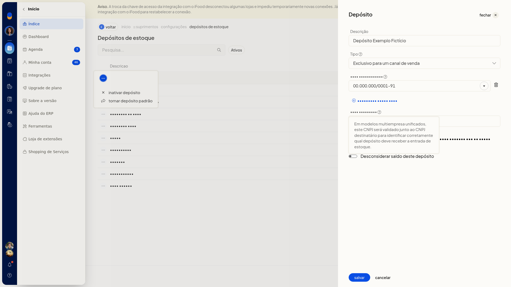
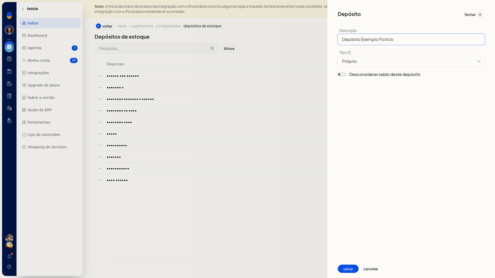
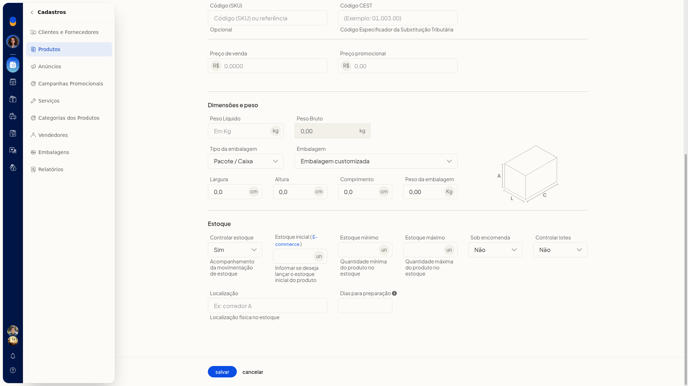
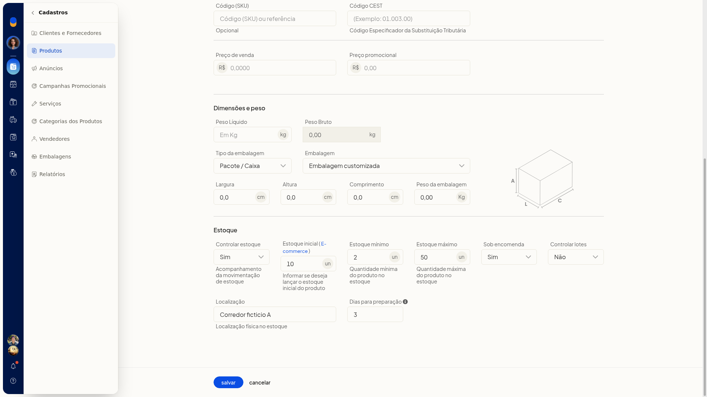
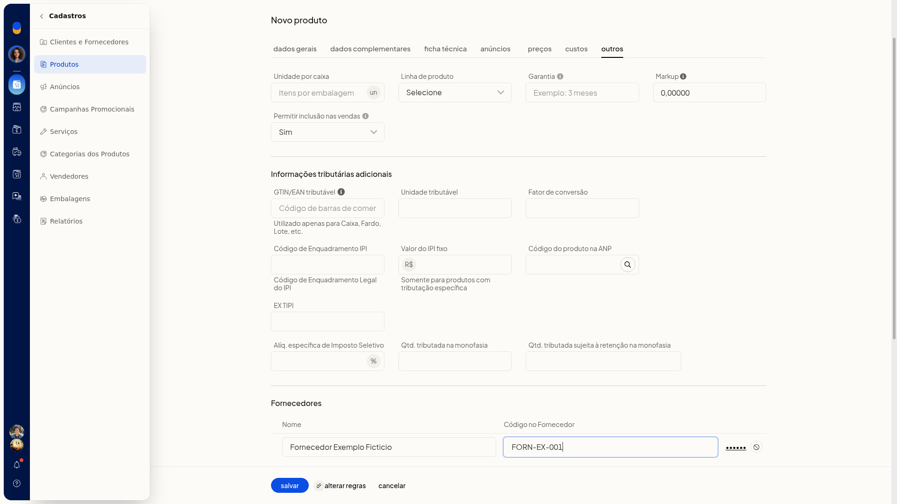

Dropshipping: depósito do fornecedor e dias de preparação
No ERP da Olist, o estoque é organizado em depósitos. Na inclusão, o Tipo pode ser Próprio ou Exclusivo para um canal de venda. Não há tipo, campo nem ação com o nome depósito de fornecedor.
No cadastro do produto, Dias para preparação informa quantos dias corridos o item leva para ficar disponível. O campo fica na seção Estoque, não na tela de depósitos.
Importante
- O Tipo do depósito só oferece Próprio e Exclusivo para um canal de venda.
- A ajuda do Tipo informa que depósitos próprios são compartilhados entre canais e que depósitos externos, em geral, são de fulfillment e exclusivos de um canal.
- Dias para preparação não é obrigatório.
- O menu da linha de um depósito oferece Inativar depósito e Tornar depósito padrão. Não há ação de depósito de fornecedor.
Instruções
Incluir o depósito
-
Acesse Configurações > Configurações ERP > Suprimentos > Depósitos de estoque.

-
Abra o menu da linha do depósito para ver Inativar depósito e Tornar depósito padrão.

-
Clique em Incluir depósito.

-
Preencha Descrição. O campo não é obrigatório. Marque Desconsiderar saldo deste depósito se o saldo desse depósito não deve ser considerado.

-
Em Tipo, mantenha Próprio ou selecione Exclusivo para um canal de venda. Próprio já vem selecionado. O campo não é obrigatório.

-
Se escolher Exclusivo para um canal de venda, preencha CNPJ no formato AA.AAA.AAA/AAAA-00. Use Adicionar outro CNPJ para informar outro número. Preencha CNPJ Remetente quando a operação for multiempresa unificado: esse CNPJ é validado junto ao CNPJ destinatário para identificar o depósito da entrada. Marque Criar transferências de estoque para notas fiscais com os CNPJs informados acima somente se quiser essa transferência. Esses campos não são obrigatórios. O formulário reúne a descrição, o tipo exclusivo e os CNPJs informados.


Informar os dias para preparação
-
Acesse Cadastros > Produtos.
-
Clique em Incluir produto.
-
Na seção Estoque, localize Dias para preparação junto de Controlar estoque, Estoque inicial, Estoque mínimo, Estoque máximo, Sob encomenda, Controlar lotes e Localização.

-
Em Dias para preparação, digite quantos dias corridos você demora para disponibilizar o produto. O campo não é obrigatório. Para variações, Depósito utilizado para as variações lista somente os depósitos já cadastrados.

-
Na aba Outros, a seção Fornecedores tem Nome, Código no Fornecedor e Adicionar fornecedor. Se o nome não existir no cadastro, a tela avisa Cadastro não encontrado no sistema. Essa seção não cria um depósito.

Resultado
O formulário de novo depósito mostra a descrição e, no tipo exclusivo, os CNPJs. No produto, Dias para preparação fica na seção Estoque com a quantidade de dias corridos para disponibilizar o item.
Informações adicionais
- A planilha de produtos não nomeia colunas de depósito nem de dias para preparação.
- Na planilha, a coluna Sob Encomenda é obrigatória e aceita Sim ou Não. No cadastro do produto, Sob encomenda também aceita Sim ou Não.